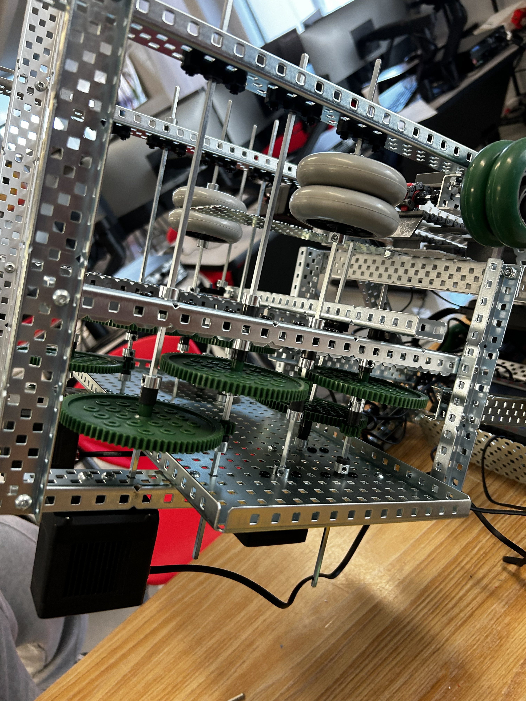

Vex Robotics
The Challenge
When I first competed in VEX, it was our team’s first time, so we had no idea what we were doing. We had to learn a whole new kind of challenge, not one focused on solving a problem, but one focused on winning a competition. We were tasked with building a robot that could shoot disks into a net and also pick them up and bring them back to our station.

The Research
Since this was my first competition, I honestly did way too little research. I mostly relied on the challenge video VEX posted on YouTube and followed their instructions for building a basic bot. They also had a 52-page rulebook, and honestly, when I saw that, I didn’t read it. That ended up being one of the biggest lessons I’ve ever learned in engineering. Do you notice something a little different about our bot in the video?
Developing Solutions
I also competed in the next season, and I learned a lot more from that experience. I built a much better robot, but I got too focused on one part of the challenge: making the bot climb. I thought it was really cool, so I spent most of my time on it, even though it was worth less than 10% of the points. In the end, the bot climbed pretty well, but I only have video of the first iteration, before I changed the motor gear ratio. In that video, it only climbs about 6 inches, but by the final version it could climb 32 inches, which was the max height.
Final Project & Reflection

In the end, during the first year, we got to the competition and thought we were really cool because everyone was staring at our bot since it looked
so different. Then we realized they were staring because our bot didn’t follow one of the most basic rules: it had to fit within 18x18x18. That was a
hard lesson, but it taught me how important it is to read rules and constraints carefully, especially in engineering. If I did this project again,
I’d spend way more time on research and planning before building anything, and I’d make sure to read the rules thoroughly to avoid mistakes like
that. Overall, I’m still proud of how our bot performed, even though we had to disassemble half of it just to compete, and I learned a lot from the
experience.
The second year, when I did VEX solo, I made it to the semifinals. I still remember the last match: in the final 15 seconds, I went for the climb. Since
I had the only bot that could climb high, everyone was watching. I clipped onto the pole and started going up, and the whole crowd started cheering. Then
I got about three-quarters of the way up, my teeth started bending, and I fell. I could hear the whole crowd go, “AWWWWWW.” It was still a really fun
experience, and I learned a lot. I eventually stopped doing VEX because it felt too game-oriented for me, more about winning than solving engineering
problems, but I still had a lot of fun and took a lot away from it.